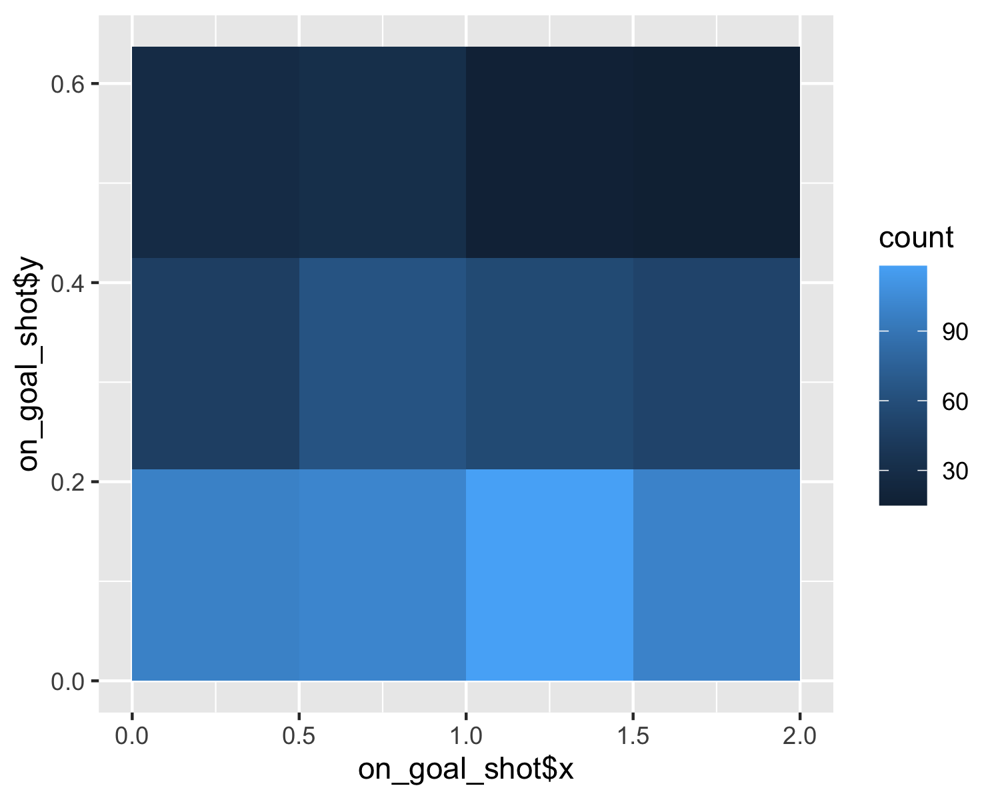

Shots on target
Intro
Hi all!
As I intend to post more vizzes again I decided that I also really like to help others make the same kind of visualizations with data easily obtainable. Getting data is really made easy with the wordlfootballR package. Check the site out to see everything that can be done.
Today we are going to use the function to scrape the data from FotMob. They use Opta data in their app, so that’s nice. I will try to make more innovative plots than just your average shot/pass map. Don’t get me wrong, I still make them all the time and even built a bot around it, but we can do better than that.
We are plotting the zones in the goal where the teams shoot. We are binning them (well, the function does it for us) and showing the percentage of the shots that end up in that bin/area of the goal.
PREPARE ENVIRONMENT
Of course you need the packages. For packages of which I use more than one function, I like to load them. For other uses, just using package::function() is good enough. You will see me use it later on.
library(worldfootballR)
library(tidyverse)GET AND PREPARE DATA
We want the match data from FotMob for all the Eredivisie matches played this season. To know which matches to scrape, we can use the following code.
league_matches <- fotmob_get_league_matches(
country = "NED",
league_name = "Eredivisie"
) %>%
filter(league_matches$status$reason$short == "FT") # only select the matches that are already played.Now we can feed the match id’s from this data frame to the next function. It will collect all the data from these matches, so it can take some time.
match_details <- fotmob_get_match_details(league_matches$id)In this data frame, there is a column called ‘shots’. This has all the shots from that match in it with all the relevant data. To make live easier, you can unnest that column so you have a bigger data frame with every shot in there.
shots_temp <- match_details %>%
unnest(shots)In the next step we are going to filter the data so we only have the shots on target that are not blocked. I do this by looking at the ‘expected_goals_on_target’ column. In the same pipe we are adding the name of the team that takes the shot. I recommend this way over an ifelse() statement as it is easier to add more conditions in the future. If you want, you can filter the data so it only has shots from open play or just no penalties.
shots_df <- shots_temp %>%
mutate(expected_goals_on_target = replace_na(expected_goals_on_target,0)) %>%
filter(expected_goals_on_target>0) %>%
mutate(team_name =
case_when(
away_team_id == team_id ~ away_team,
TRUE ~ home_team
))PLOTTING
Now we can start to plot. From past visualizations I made, I know the coordinates of the goal. The bottom left corner is (0,0) and the top right corner is (2,0.6367725). I decided to make 12 areas, so we have to devide those numbers bij 4 and 3. Let’s plot the whole league first to get a feeling for how it will look.
shots_df %>%
ggplot(aes(on_goal_shot$x,on_goal_shot$y))+
stat_bin_2d(aes(on_goal_shot$x,on_goal_shot$y,fill=..count..),
binwidth = c(0.5, (0.6367725/3)),
drop=FALSE) 
Looks horrible, but the idea is clear. The most shots go to the area on the bottom, just right of the middle. To sort this by team, we can use a simple facet_wrap as you can see below.
shots_df %>%
ggplot(aes(on_goal_shot$x,on_goal_shot$y))+
stat_bin_2d(aes(on_goal_shot$x,on_goal_shot$y,fill=..count..),
binwidth = c(0.5, (0.6367725/3)),
drop=FALSE)+
facet_wrap(~team_name)Now we’re getting somewhere! I really prefer to see how the areas correspond with each other per team though. So I’m going to add some code to print the percentage of shots in each area per team. This prints a text with the percentage in every area and the ..PANEL.. parts make sure it is the percentage per team and not per competition.
shots_df %>%
ggplot(aes(on_goal_shot$x,on_goal_shot$y))+
stat_bin_2d(aes(on_goal_shot$x,on_goal_shot$y,fill=..count..),
binwidth = c(0.5, (0.6367725/3)),
drop=FALSE)+
stat_bin_2d(geom = "text",
aes(
label=paste0((100*(round((..count..)/tapply(..count..,..PANEL..,sum)[..PANEL..],2))),"%")),
binwidth = c(0.5, (0.6367725/3)))+
facet_wrap(~team_name)When saved in the right ratio, it already looks okay(ish).
The next step is to make is look way better than it does.
THEMING THE PLOT
The things we want to do:
Draw a goal
change font
remove legend
remove axis ticks/names/numbers
make it pretty
shots_df %>%
ggplot(aes(on_goal_shot$x,on_goal_shot$y))+
stat_bin_2d(aes(on_goal_shot$x,on_goal_shot$y,fill=..count..),
binwidth = c(0.5, (0.6367725/3)),
drop=FALSE)+
stat_bin_2d(geom = "text", size=3,colour="white",
aes(
label=paste0((100*(round((..count..)/tapply(..count..,..PANEL..,sum)[..PANEL..],2))),"%")
),
binwidth = c(0.5, (0.6367725/3)))+
#facet_wrap(~team_name)+
geom_segment(aes(x=0,xend=0,y=0,yend=0.66534392-0.028571429),colour="white")+ #drawing a goal
geom_segment(aes(x=0-0.028571429,xend=0-0.028571429,y=0,yend=0.66534392),colour="white")+
geom_segment(aes(x=2,xend=2,y=0,yend=0.66534392-0.028571429),colour="white")+
geom_segment(aes(x=2+0.028571429,xend=2+0.028571429,y=0,yend=0.66534392 ),colour="white")+
geom_segment(aes(x=0,xend=2,y=0.66534392-0.028571429,yend=0.66534392-0.028571429),colour="white")+
geom_segment(aes(x=0-0.028571429,xend=2+0.028571429,y=0.66534392,yend=0.66534392),colour="white")+
scale_fill_gradient(low = "#120E41", high = "#E172A8")+
labs(title= "Where do the Eredivisie teams shoot on goal?",
subtitle = "Percentage of shots per area",
caption = "Data: Opta via FotMob\n@RobinWilhelmus")+
theme(plot.background = element_rect(fill = "#120E41", colour = "#120E41"),
panel.background = element_rect(fill = "#120E41", colour = "#120E41"),
legend.position = "none",
panel.grid = element_blank(),
axis.ticks = element_blank(),
axis.text = element_blank(),
axis.title = element_blank(),
strip.background = element_rect(fill="#69C5D2"),
strip.text = element_text(family = "Spartan-Medium", color= "#120E41"),
plot.title = element_text(family = "Spartan-Bold", colour="#69C5D2",size=18),
plot.subtitle = element_text(family = "Spartan-Bold", colour="#69C5D2",size=14),
plot.caption = element_text(family = "Spartan-Light", colour="#69C5D2",size=10))
Well, this looks nice. At first I was really happy with this plot, but it bothers me that the 18% in PSV’s plot is more highlighted than the 21% for NEC Nijmegen. This is because the colours are the absolute values and the labels are per club. I looked for a way to change this and still using facet_wrap() but couldn’t find a way. I do however found another way. It’s a bit harder, but I will guide you through it.
A BETTER WAY
To make the plot the way I decribe above, we need to use {patchwork}. To make it easy for ourselves. We will first create a function of the above plot. We change some things, because the function will output 18 different plots. One for each club. So we need to set the title for each club. Let’s take a look. The reason I do it this way is to avoid an if-loop. You can totally do it that way, but I learned to avoid them if possible.
plot_func <- function(df, name) {
df %>%
ggplot(aes(on_goal_shot$x,on_goal_shot$y))+
stat_bin_2d(aes(on_goal_shot$x,on_goal_shot$y,fill=..count..),
binwidth = c(0.5, (0.6367725/3)), colour="white",linetype="dashed",
drop=FALSE)+
stat_bin_2d(geom = "text", size=3,colour="white",
aes(
label=paste0((100*(round(..count../sum(..count..),2))),"%")
),
binwidth = c(0.5, (0.6367725/3)))+
geom_segment(aes(x=0,xend=0,y=0,yend=0.66534392-0.028571429),colour="white")+ #drawing a goal
geom_segment(aes(x=0-0.028571429,xend=0-0.028571429,y=0,yend=0.66534392),colour="white")+
geom_segment(aes(x=2,xend=2,y=0,yend=0.66534392-0.028571429),colour="white")+
geom_segment(aes(x=2+0.028571429,xend=2+0.028571429,y=0,yend=0.66534392 ),colour="white")+
geom_segment(aes(x=0,xend=2,y=0.66534392-0.028571429,yend=0.66534392-0.028571429),colour="white")+
geom_segment(aes(x=0-0.028571429,xend=2+0.028571429,y=0.66534392,yend=0.66534392),colour="white")+
scale_fill_gradient(low = "#120E41", high = "#E172A8")+
labs(title= glue::glue("{name}")
#subtitle = "Percentage of shots per area",
#caption = "Data: Opta via FotMob\n@RobinWilhelmus"
)+
theme(plot.background = element_rect(fill = "#120E41", colour = "#120E41"),
panel.background = element_rect(fill = "#120E41", colour = "#120E41"),
legend.position = "none",
panel.grid = element_blank(),
axis.ticks = element_blank(),
axis.text = element_blank(),
axis.title = element_blank(),
strip.background = element_rect(fill="#69C5D2"),
strip.text = element_text(family = "Spartan-Medium", color= "#120E41"),
plot.title = element_text(family = "Spartan-Bold", colour="#69C5D2",size=8,hjust=.5),
plot.subtitle = element_text(family = "Spartan-Bold", colour="#69C5D2",size=4),
plot.caption = element_text(family = "Spartan-Light", colour="#69C5D2",size=3))
}So in the title of the plot, I put the team name with glue::glue(). You may have to install this package. Of course you can add more stuff to the plot, like the team logo or the number of shots. Go wild! I changed the label in stat_bin_2d as well, as we don’t have to calculate the percentages per panel as there is only one panel every time we plot.
Now make the plots
nested_tmp <- shots_df %>%
group_by(team_name) %>%
nest() %>%
arrange(team_name) %>%
mutate(plots = map2(data, team_name, plot_func)) And now use {patchwork} to wrap the plots together. If you’re not familiar with this packages, read the documentation. It is from the same maker as {ggplot} and therefore works great with it.
library(patchwork) # we use it multiple times in this piece of code
wrap_plots(nested_tmp$plots)+ #gather all the plots
plot_annotation(
title = 'Where do the Eredivisie teams shoot on goal?',
subtitle = 'Percentage of shots per area',
caption = 'Data: Opta via FotMob\n@RobinWilhelmus'
) &
plot_annotation(theme =
theme(plot.background = element_rect(fill="#120E41",colour = "#120E41"),
plot.title = element_text(family = "Spartan-Bold", colour="#69C5D2",size=18),
plot.subtitle = element_text(family = "Spartan-Bold", colour="#69C5D2",size=14),
plot.caption = element_text(family = "Spartan-Light", colour="#69C5D2",size=10)))And as you can see, now the area with the most shots per team is highlighted. It took some extra step, but it was worth it.
Maybe the two different ways to make this plot is a bit redundant, but I learned some stuff making it both ways so just wanted to share.
If you have any questions or want to see a tutorial about a viz you saw online, send me a message on Twitter. And tag me if you make one in your own style and post it to Twitter!